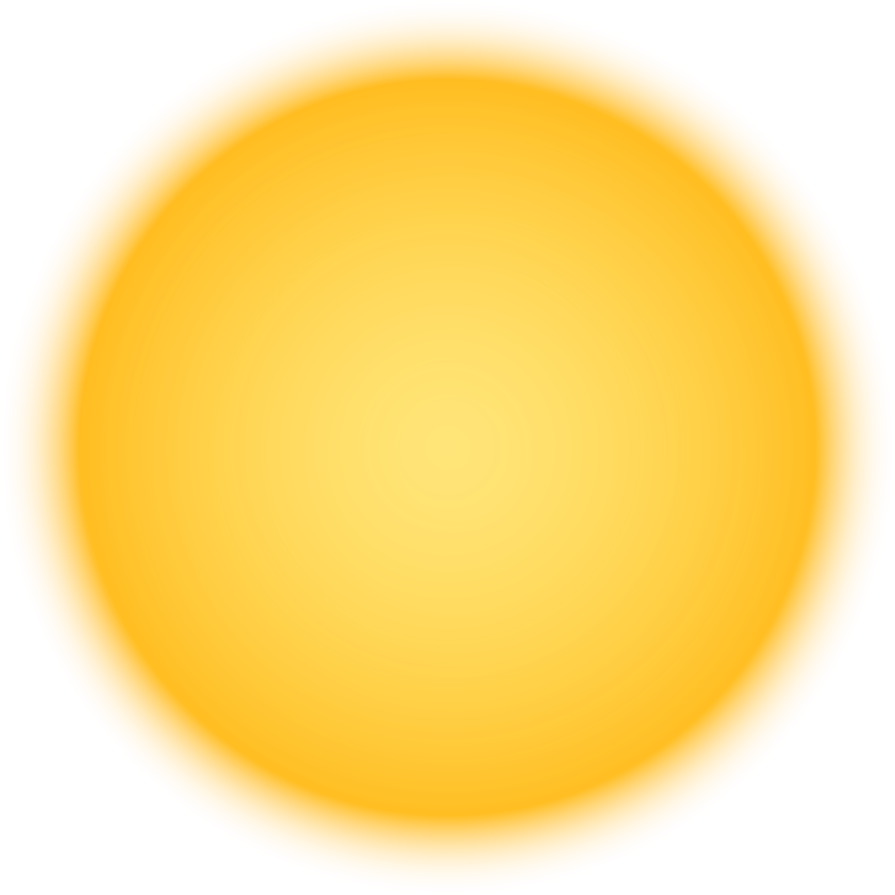
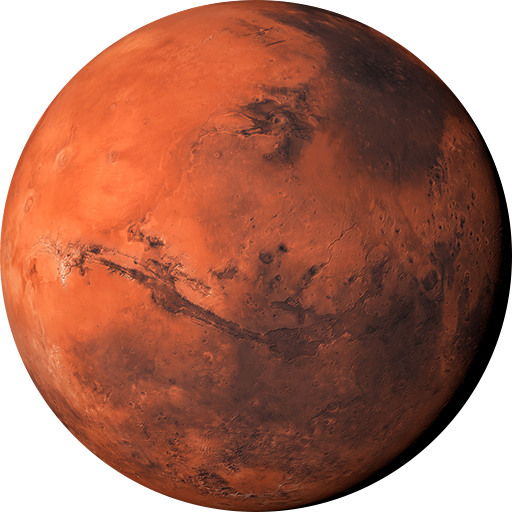

The Sun is the Solar System's star and by far its most massive component. Its large mass (332,900 Earth masses), which comprises 99.86% of all the mass in the Solar System, produces temperatures and densities in its core high enough to sustain nuclear fusion of hydrogen into helium. This releases an enormous amount of energy, mostly radiated into space as electromagnetic radiation peaking in visible light.

Mercury (60 million km; 37 million mi from the Sun) is the closest planet to the Sun. The smallest planet in the Solar System, Mercury has no natural satellites. The dominant geological features are impact craters or basins with ejecta blankets, the remains of early volcanic activity including magma flows, and lobed ridges or rupes that were probably produced by a period of contraction early in the planet's history.

Venus (100 million km; 65 million mi from the Sun) is close in size to Earth (0.815 M Earth) and, like Earth, has a thick silicate mantle around an iron core, a substantial atmosphere, and evidence of internal geological activity. It is much drier than Earth, and its atmosphere is ninety times as dense. Venus has no natural satellites. It is the hottest planet, with surface temperatures over 400 °C (752 °F), mainly due to the amount of greenhouse gases in the atmosphere. The planet has no magnetic field that would prevent depletion of its substantial atmosphere.

Earth (150 million km; 93 million mi) from the Sun) is the largest and densest of the inner planets, the only one known to have current geological activity, and the only place where life is known to exist. Its liquid hydrosphere is unique among the terrestrial planets, and it is the only planet where plate tectonics has been observed. Earth's atmosphere is radically different from those of the other planets, having been altered by the presence of life to contain 21% free oxygen.

Mars (220 million km; 140 million mi from the Sun) is smaller than Earth and Venus (0.107 M Earth). It has an atmosphere of mostly carbon dioxide with a surface pressure of 6.1 millibars; roughly 0.6% of that of Earth but sufficient to support weather phenomena. Its surface, peppered with volcanoes, such as Olympus Mons, and rift valleys, such as Valles Marineris, shows geological activity that may have persisted until as recently as 2 million years ago.

Jupiter (780 million km; 480 million mi from the Sun), at 318 M Earth, is 2.5 times the mass of all the other planets put together. It is composed largely of hydrogen and helium. Jupiter's strong internal heat creates semi-permanent features in its atmosphere, such as cloud bands and the Great Red Spot. The planet possesses a 4.2–14 Gauss strength magnetosphere that spans 22–29 million km, making it, in certain respects, the largest object in the Solar System.

Saturn (1.42 billion km; 880 million mi from the Sun), distinguished by its extensive ring system, has several similarities to Jupiter, such as its atmospheric composition and magnetosphere. Although Saturn has 60% of Jupiter's volume, it is less than a third as massive, at 95 MEarth. Saturn is the only planet of the Solar System that is less dense than water. The rings of Saturn are made up of small ice and rock particles. Saturn has 83 confirmed satellites composed largely of ice. Two of these, Titan and Enceladus, show signs of geological activity

Uranus (2.87 billion km; 1.78 billion mi from the Sun), at 14 M Earth, has the lowest mass of the outer planets. Uniquely among the planets, it orbits the Sun on its side; its axial tilt is over ninety degrees to the ecliptic. This gives the planet extreme seasonal variation as each pole points toward and then away from the Sun. It has a much colder core than the other giant planets and radiates very little heat into space. As a consequence, it has the coldest planetary atmosphere in the Solar System. Uranus has 27 known satellites, the largest ones being Titania, Oberon, Umbriel, Ariel, and Miranda.

Neptune (4.50 billion km; 2.80 billion mi from the Sun), though slightly smaller than Uranus, is more massive (17 M Earth) and hence more dense. It radiates more internal heat than Uranus, but not as much as Jupiter or Saturn. Neptune has 14 known satellites. The largest, Triton, is geologically active, with geysers of liquid nitrogen. Triton is the only large satellite with a retrograde orbit, which indicates that it did not form with Neptune, but was probably captured from the Kuiper belt.